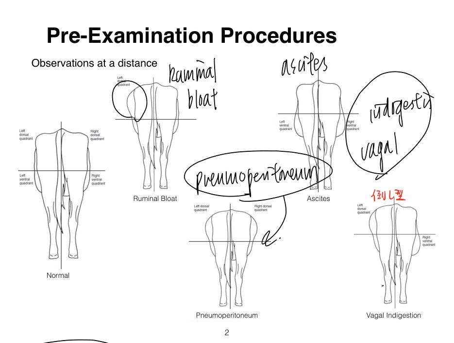
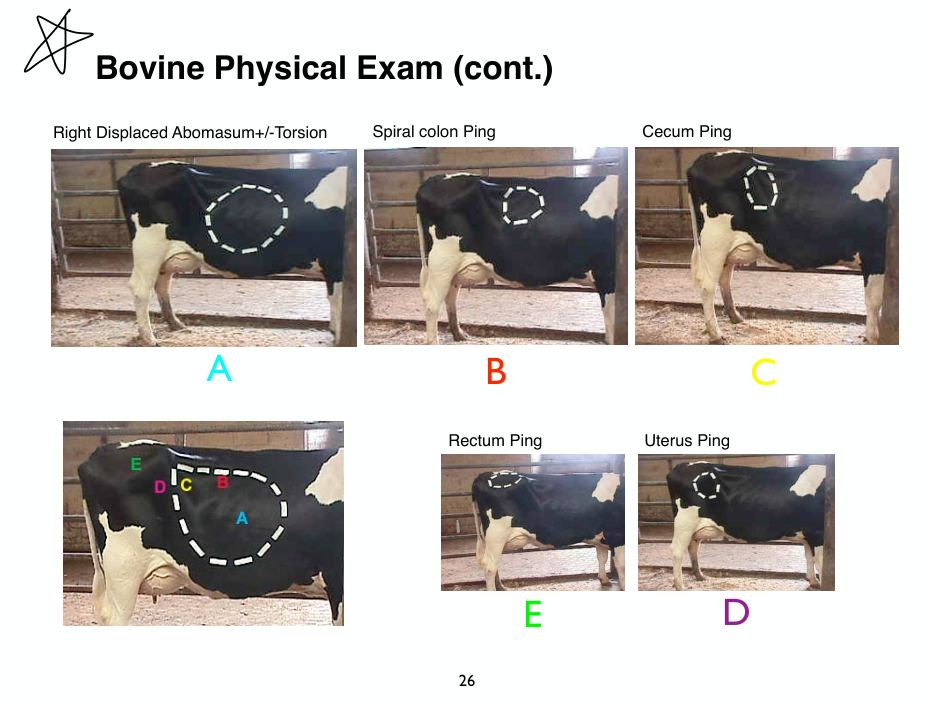
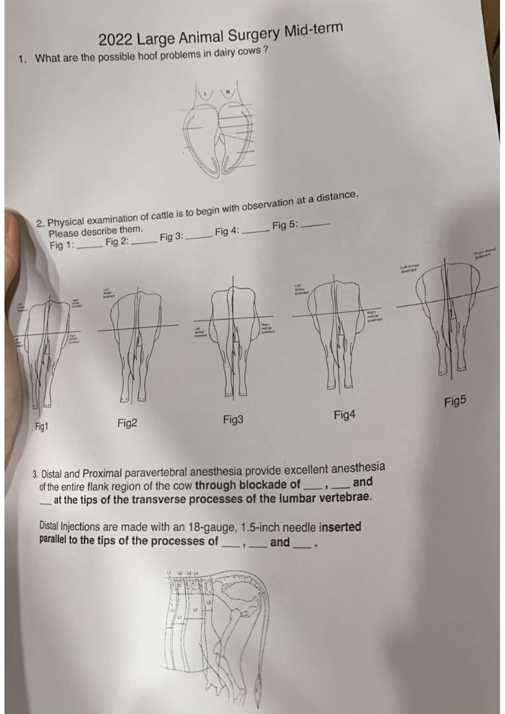
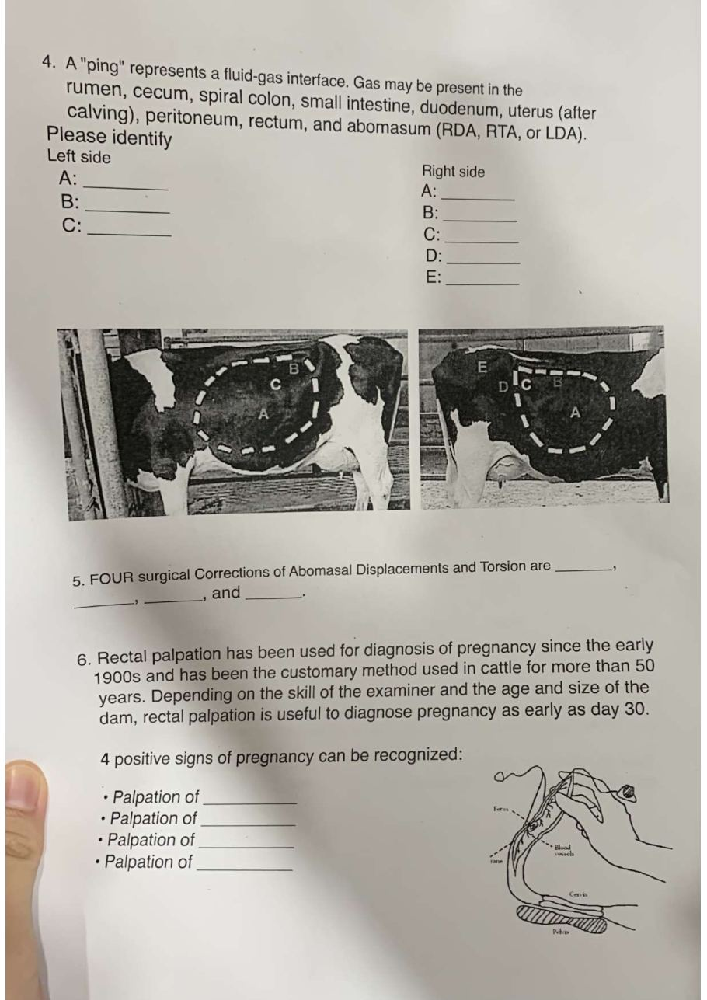
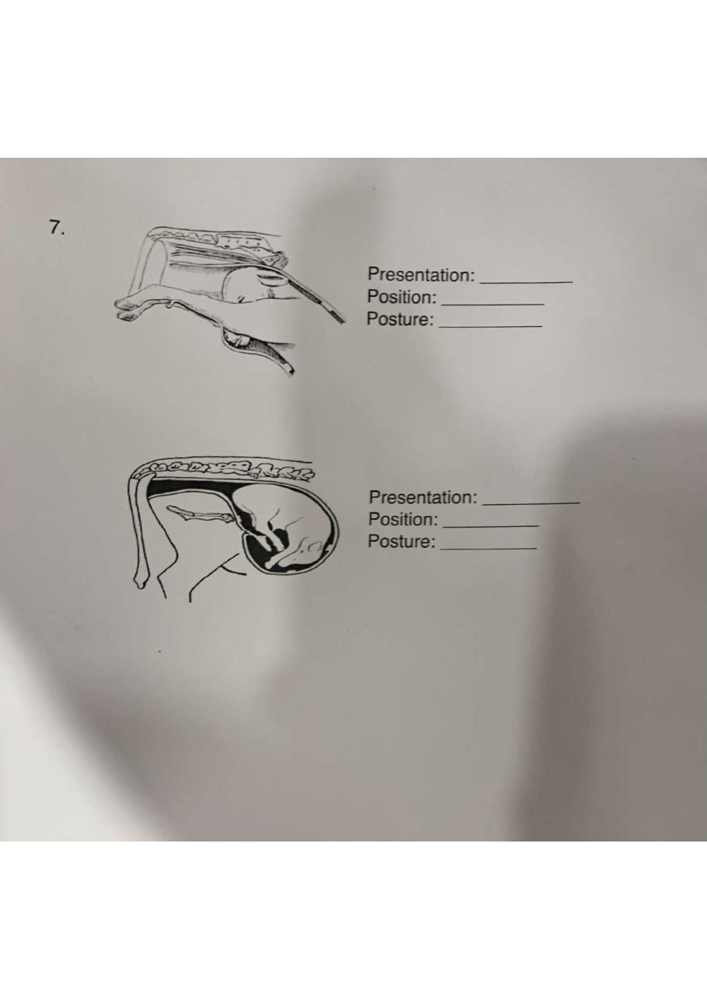

總覽：年份 × 老師
大外期中由三位老師各出一部分：季昭華＝術前檢查程序（申論一題，年年考）；余品奐＝縫線、縫針、縫合法（問答與畫圖）；許凱程＝蹄病、理學檢查（遠觀、ping）、脊椎旁麻醉、皺胃變位手術、懷孕檢查、胎位（填空與填圖）。高頻＝跨年重複出現。
| 年份 | 季昭華 | 余品奐 | 許凱程 | 來源 |
|---|---|---|---|---|
| 2007 | 蹄葉炎原因類型治療；腹腔探查原則；LDA 診斷與手術；畫縫合（水平褥式、垂直褥式、連續鎖邊、連續 Lambert、荷包）——老師未標 | 融合 p.27–28 | ||
| 2011 | 蹄病；LDA 手術四擇二；畫縫合；腹腔探查原則；開放式去勢（當年註「沒教不用管」）——老師未標 | 融合 p.9–20 | ||
| 2014、2015 | — | — | 蹄病、懷孕檢查、胎位、遠端脊椎旁麻醉、ping；2015 加遠觀 | 融合 p.9–14 |
| 2016（105） | — | 好縫線三特質；圓弧針優勢；畫水平褥式＋優點時機；transfix | 蹄病、遠端脊椎旁、ping、LDA 手術、懷孕檢查、胎位、遠觀 | 融合 p.21–25 |
| 2018 | — | 好縫線三特質；圓針 vs 角針；水平褥式（畫、優缺點）；transfix | 蹄病、遠觀、遠端脊椎旁、ping | 融合 p.6–8、p.17–18（照片） |
| 2019 | — | （照片不清） | 蹄病、遠觀、遠端脊椎旁 | 融合 p.3 |
| 2021 | 術前檢查程序與注意事項 | （未記錄） | 蹄病填圖、ping A–E、懷孕檢查四個 palpation、胎位兩圖、遠端脊椎旁 | 融合 p.1–2 |
| 2022 | 術前檢查程序及應注意事項 | 好縫線三特質（10）；圓弧針 vs 直針（5）；畫水平褥式＋優點時機＋缺點（15） | 蹄病填圖；遠觀 5 圖；脊椎旁填空；ping 左 A–C 右 A–E；DA 四種手術；懷孕四個 positive signs；胎位兩圖 | 2022 原卷＋參考答案 |
| 2023（B09） | 同 2022 | 題目措辭不同、方向一樣 | 同 2022；蹄病「10 個挖 5 個填空」 | b09.docx |
| 年份不明 | — | 8 題：縫線特質、圓弧針、水平褥式、transfix、膀胱縫合、面部或足部外傷縫合、畫三種縫合、豬麻醉監控三項 | （只看到遠觀圖開頭） | 「大外期中考古全.pdf」截圖 |
答案來自學長姐批改、參考答案與本站筆記，非官方。許凱程的懷孕檢查、胎位、遠觀、ping 在今年大外講義裡沒有出現（2020 年是許凱程〈牛隻理學檢查〉〈繁殖檢查〉兩堂課，見 B06 共筆）；今年是否還會考、出自哪份講義，請以老師上課為準。有學生姓名學號的考卷照片沒有放上網站。
季昭華：術前檢查程序及應注意事項 高頻
2021、2022、2023 都考同一題申論：「試簡述大動物外科術前檢查程序及應注意事項」。答題架構已整理在 術前考量與麻醉・第 4 節（共筆＋今年講義）。
檢查病例 → 身體檢查（體型 BCS、姿勢〔發情？〕、精神狀態、性情、體表凸起潰瘍掉毛、體溫）→ 禁食 → 接觸檢查（視、觸、聽、叩、氣味）→ 消毒清潔手術部位 → 血檢 → 抗生素的給予。
- 術前檢查：病歷 → 全體檢查 → 局部檢查（視觸叩聽探嗅）→ 特殊檢查 → 實驗室（PCV、RBC、TP；依情境加電解質、酮體、腹腔液）
- 術前準備：時機（緊急／擇期／限期）、禁食（講義：牛 12–24 h、前一晚禁水；共筆：牛難完全排空、過久影響菌相）、營養、安靜、特殊器材
- 術前評估（手術判斷）：是否必要、不做會怎樣、能力設備是否足夠（不足轉診）、經濟效益
- 無菌分類與抗生素：clean／clean-contaminated／contaminated-dirty；術前給、最晚術中；不能彌補技術；馬注意破傷風
- 術前計畫：解剖 → 除污剃毛刷洗 → 站立或倒臥 → 麻醉 → 尾巴固定 → 由內往外消毒 → 洞巾
- 術後管理：甦醒、保溫、監護、併發症、安靜活動、感染控制、飼養管理
余品奐：縫線、縫針、縫合法（＋豬麻醉）
題目每年換措辭，但方向固定：好縫線的特質、圓弧針的優勢、水平褥式、transfix、膀胱與肢端傷口選線。答案對照 縫合材料與結紮技術。
| 題目 | 出現 | 答案要點 |
|---|---|---|
| 列舉三項好縫線應有的特質 高頻 | 2016、2018、2022、年份不明 | 組織反應小；不製造利於細菌生長的環境；不導電、無毛細作用、不致敏、不致癌；手術者好操作；打結牢固不割斷不磨損；不需要時消失；經濟（講義 p.3）。寫三項就夠，挑最有把握的 |
| 圓弧形針相較直線型針的優勢 高頻 | 2016、2018（圓針 vs 角針）、2022 | 迴轉半徑小，可在較小的空間縫合，轉動手腕即可，好操作（共筆：越彎的針迴轉半徑越小）。2018 版是圓針 vs 角針：圓針只有針尖切、針體不切，組織傷害小，適合薄組織；角針能切割，適合牛的厚皮 |
| 畫 interrupted horizontal mattress，寫優點／時機／缺點 高頻 | 2016、2018、2022 | 縫線與傷口平行、兩針一組；優點：減張效果最好、抵抗組織內翻（爬蟲類皮膚）；時機：肌肉對合（muscle belly reapposition）、張力大的傷口，可先用它減張再用單純間斷；缺點：傷口外翻、減少血流、癒合較慢（講義 p.16；共筆） |
| 畫 transfix ligation，寫使用時機 | 2016、2018、年份不明 | 先穿過組織再繞圈打結；防止滑脫、增加摩擦與張力；用於表面光滑或太粗的束狀組織，例如精索（大公豬去勢）、子宮頸；斷端留越少越好（講義 p.22） |
| 膀胱縫合用什麼線、縫法、原因，畫出縫法 | 年份不明 | 單股（表面積小、避免結晶堆積）、可吸收（內臟癒合快、不需拆線）；不穿透黏膜，第一層 Lambert、第二層 Cushing，防止滲漏（講義 p.7、p.19–20；共筆）。另一份參考答案寫「可吸收線＋圓針＋Lambert」 |
| 面部或足部外傷用什麼線、縫法、原因，畫出縫法 | 年份不明（融合 p.5 也有） | 不可吸收線（張力大、癒合慢）；間斷垂直褥式（減張且對血流壓迫較小，肢端血液循環本來就差）（講義 p.17；共筆） |
| 圖示縫合：vertical mattress、interrupted horizontal mattress、continuous Lambert（另有 continuous lock stitch、purse string） | 2007、2011、年份不明 | 畫圖題，見縫合頁第 8 節的講義圖；年份不明那份把 continuous lock stitch 劃掉（今年講義沒有） |
| 寫出三種豬隻麻醉監控可依靠的東西 | 年份不明 | 心臟監測（ECG、血氣、脈搏血氧）、麻醉深度（jaw tone 最可靠、心跳血壓、角膜反射）、通氣（18–22 cmH₂O、5–10 mL/kg、EtCO₂ 40–50 mmHg、12–15 次／分）、術後每 15 分鐘量心跳體溫到翻正反射恢復（見 豬的麻醉・監測） |
使用者提供的截圖還有余品奐老師期末的題目（2020 及其他年）。今年豬的麻醉在期中前就上了，可能會出現在期中，先列出來準備：
- 豬實習麻醉流程：誘導藥物、給藥方式、維持藥物、拮抗劑、術後注意。參考答案：誘導 xylazine IM／Zoletil IM 或 IV；拮抗 tolazoline、yohimbine、atipamezole（α2 拮抗）；lidocaine 局部麻醉；維持 propofol IV；atropine IM 防止口水太多。
- 列舉使用 α2 致效劑進行豬麻醉常見的兩項併發症：容易嘔吐、血管收縮使上針困難、心律不整（atipamezole 拮抗）。
- 列舉豬麻醉常見的三項一般併發症（不與上題重複）：hypoventilation、hypotension、hypothermia（另有 bradycardia、插管後 apnea、heavy secretion）。
- 另有泌尿道結石手術（公羊導尿困難的解剖原因、tube cystotomy 與 bladder marsupialization 比較）——今年講義尚未上到。
許凱程：蹄病、理學檢查、麻醉、皺胃、懷孕與胎位
許凱程的題目考古率很高，2022 與 2023 幾乎一樣，2014 以來的題目也一直重複。題型是填空與填圖。
1. 牛的蹄病（填圖）高頻
2011、2014、2015、2016、2018、2019、2021、2022 都考；2023 是講義 p.9 的十個病灶挖五個填空。答案：見 牛蹄病・病灶位置圖——1 digital dermatitis、2 sole ulcer、3 white line separation＋abscessation、4 interdigital necrobacillosis、5 heel erosion、6 interdigital dermatitis、7 laminitis、8 interdigital hyperplasia、9 puncture、10 toe ulcer。
2. 遠觀（observation at a distance）：從後方看腹部輪廓 高頻
2015、2016、2018、2019、2022。2022 參考答案：圖 1 normal、圖 2 瘤胃鼓脹（ruminal bloat）、圖 3 腹水（ascites）或懷孕、圖 4 迷走神經性消化不良（vagal indigestion）、圖 5 氣腹（pneumoperitoneum）。

3. 遠端（與近端）脊椎旁麻醉 高頻
2014、2015、2016、2018、2019、2021、2022。2022 是填空：「…through blockade of T13、L1、L2 at the tips of the transverse processes…Distal injections are made with an 18-gauge, 1.5-inch needle inserted parallel to the tips of the processes of L1、L2、L4.」今年講義的內容見 術前考量與麻醉・脊椎旁神經阻斷。
4. Ping（左右側腹部聽叩診）高頻
2014、2015、2016、2018、2021、2022。2022 題目：「A ping represents a fluid-gas interface…Please identify」，給左右兩張照片：
| 左側 | 右側 |
|---|---|
| A：LDA（皺胃左方變位） B：rumen gas cap（瘤胃氣帽） C：peritoneal cavity（氣腹） | A：RDA 或皺胃扭轉（RTA） B：spiral colon ping C：cecum ping D：uterus ping E：rectum ping |

鑑別說明見 腹腔手術・第 7 節。
5. 皺胃變位的四種手術
2022：「FOUR surgical corrections of abomasal displacements and torsion are ___」。今年講義的四種：right-flank omentopexy、toggle-pin abomasopexy、laparoscopic abomasopexy、ventral paramedian abomasopexy（腹腔手術）。舊年份（2011、2015、2016 的「四擇二」申論）的四種是 right-flank omentopexy、right-flank abomasopexy、left-flank abomasopexy、ventral paramedian abomasopexy——版本不同，見第 6 節。
6. 懷孕檢查：直腸觸診的四個 positive signs 高頻
2014、2015、2016、2021、2022。答案：palpation of the fetal membrane slip（胎膜滑動）、amniotic vesicle（羊膜囊）、placentomes（子葉）、fetus（胎兒）。舊題另問 supporting signs：子宮角不對稱、子宮壁彈性與波動感、（子宮頸位置改變）、子宮中動脈變粗與搏動（fremitus）、卵巢變化（黃體）。
30–35 天靠胎膜反應確診（輕拉有滑動感）；約 120 天摸得到 placentomes（像香菇黏在子宮壁）；子宮中動脈約 75–80 天開始變粗搏動（以前書上寫 90 天）。今年大外講義沒有這部分。
7. 胎位、胎向、胎勢 高頻
2014、2015、2016、2021、2022。定義：Presentation（胎位）＝胎兒縱軸與產道的關係：頭位 anterior、尾位 posterior、橫位 transverse、豎位 vertical；Position（胎向）＝胎兒脊椎與母體的關係：上胎向 dorsal、下胎向 ventral、側胎向 lateral；Posture（胎勢）＝頭與四肢的姿勢。
2022 兩張圖的參考答案：上圖 anterior、dorsal、頭下彎（downward deviation of head）；下圖 posterior、dorsal、雙側髖關節屈曲（hip flexion，臀位）。2016 的圖：anterior、dorsal、頭與前肢正常但後肢垂直。
跨年高頻主題（考前優先）
資料可信度與各版本不一致處
- 四種皺胃變位手術：舊考古（2011–2016）是 right-flank omentopexy、right-flank abomasopexy、left-flank abomasopexy、ventral paramedian；今年講義是 right-flank omentopexy、toggle-pin、laparoscopic、ventral paramedian。⚠ 2022 的填空題答案沒有寫在參考答案上，以今年講義為準。
- 遠觀圖 3：2022 參考答案寫「腹水、懷孕」；對照圖只標 ascites。
- 懷孕 supporting signs：2015 版寫「fixation of the cervix」，105 版寫「子宮頸固定」；這一項教科書說法不一，⚠ 待確認。
- 膀胱縫合：參考答案有「Lambert 一層」與「第一層 Lambert、第二層 Cushing」兩種寫法；共筆強調不穿過黏膜、用單股線。
- 許凱程的遠觀、ping、懷孕、胎位：今年的大外講義（到第 7 份為止）沒有這些內容。⚠ 今年是否會考請留意老師上課。
- 2018、2019 的原卷照片有學生姓名與學號，所以本頁只整理題目，不放照片。
考古題練習（照原題，先寫再核對）
依 2022 原卷題型。先自己寫，再點開核對。即時作答的選擇題版本在 期中考古自我測驗。



見第 2 節六段寫法：術前檢查 → 術前準備 → 術前評估 → 無菌與抗生素 → 術前計畫 → 術後管理。
組織反應小；不利細菌生長；不導電、無毛細作用、不致敏、不致癌；好操作；打結牢固不割斷；不需要時消失；經濟（擇三）。
迴轉半徑小，可在較小、較深的空間縫合，只要轉動手腕，操作方便。
縫線與傷口平行、兩針一組打結。優點：減張最好、抵抗組織內翻；時機：肌肉對合、張力大的傷口（可配合單純間斷）。缺點：傷口外翻、減少血流、癒合慢。
先穿過組織再繞圈打結；防滑脫；用於光滑或粗的束狀組織，如精索、子宮頸。
單股（避免結晶附著）、可吸收；不穿過黏膜，Lambert＋Cushing 兩層內翻，防止滲漏。
不可吸收線（張力大、癒合慢）；間斷垂直褥式（減張且對血流壓迫小，肢端血循較差）。
ECG（易心律不整）；jaw tone（最可靠的深度指標）；通氣參數／EtCO₂ 40–50 mmHg；體溫；術後每 15 分鐘到翻正反射恢復。
1 digital dermatitis、2 sole ulcer、3 white line separation + abscessation、4 interdigital necrobacillosis、5 heel erosion、6 interdigital dermatitis、7 laminitis、8 interdigital hyperplasia、9 puncture、10 toe ulcer。
1 normal；2 ruminal bloat；3 ascites（或懷孕）；4 vagal indigestion；5 pneumoperitoneum。
T13、L1、L2；L1、L2、L4。
左：A LDA、B rumen gas cap、C peritoneal cavity。右：A RDA／RTA、B spiral colon、C cecum、D uterus、E rectum。
今年講義：right-flank omentopexy、toggle-pin abomasopexy、laparoscopic abomasopexy、ventral paramedian abomasopexy（舊版有 right／left-flank abomasopexy，見第 6 節）。
Fetal membrane slip、amniotic vesicle、placentomes、fetus。
上：anterior、dorsal、頭下彎（downward deviation of head）。下：posterior、dorsal、雙側髖屈曲（hip flexion，臀位）。